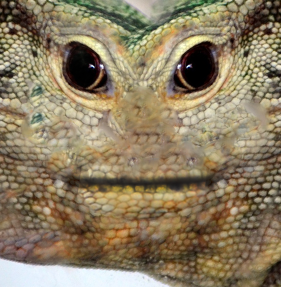
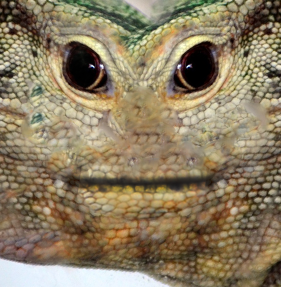
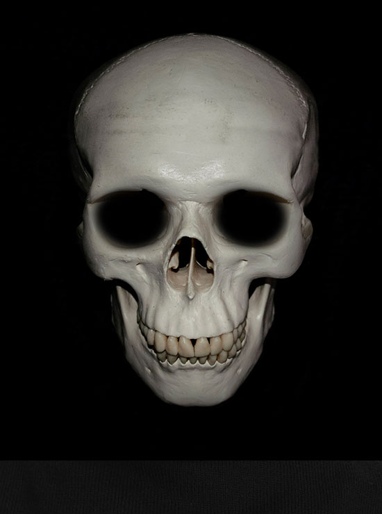
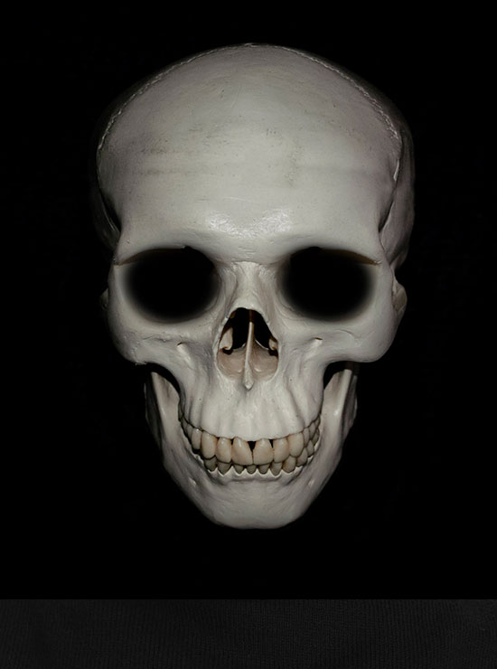

Because: Science
Global Game Jam 2014 "game" by: Anders Antila
Controls: None. You just use your web camera.
Go fullscreen with F11 or command+Shift+F.
^ Start the game by allowing your web camera to be used.
"We don't see things as they are, we see them as we are."
This game have these optional diversifiers:
- Hackontroller - The game must use a custom controller invented by the team, or use an existing controller in unconventional manner.
- Honor Aaron Swartz - The game only uses materials found in the public domain.
I'm not sure a webcamera controler is unconventional enough to qualify. Honoring Aaron was en easy choice as he's an inspiration to myself and many others, having worked to librate academic works from their paywalls.
Special thanks goes to Tekniska Museet for hosting us, and all the arrangers for putting it together.
It has been an inspiring event seeing all these inspired people working hard to make something great. Unfortunately I won't be able to attend on Sunday.
Uses the CLMTracker library for face detection. Canvas rendering by Phaser.Is this a game? Maybe not, but I had fun making it.
Here's some more stuff I've done during Jams.
BUTTKICKATRON 2000, made in literary zero hours for the zero hour game jam: make a game between 2am and 2am during the DST time switch.
Monkey Rally made with a team for the 28th Ludum Dare.
Misunderstood Shark. Made for the SharkJam (Mini Ludum Dare #46)
I'm also extremely proud of having had the opportuinty to consult for the industry. Check out my Moby Games page too see what I've worked on that's not covered by an NDA.
 

 
